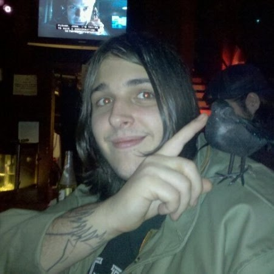
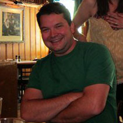
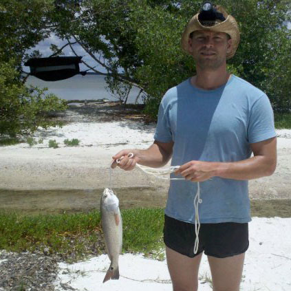
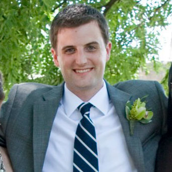
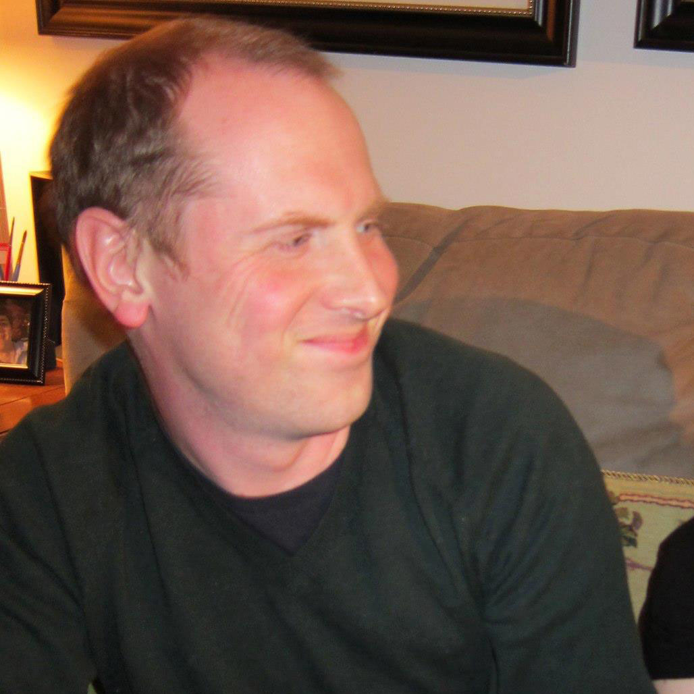
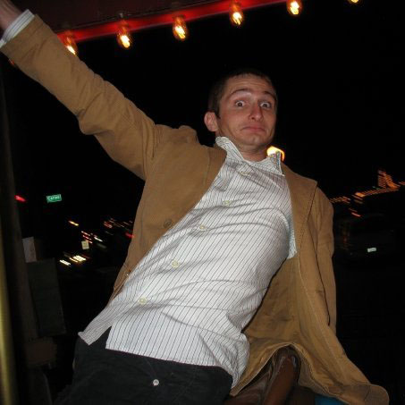

-

James Halcrow, Best Man
Brother of the Groom, lead singer for Wizard Smoke, and inventor of "Fancy Sauce." My best friend since I can remember, James has always been there to help me remember that nobody is ever above getting made fun of mercilessly. -

Chris Boedeker
Master of carpentry, poker, and the sweet science of the buffalo wing. Chris and I met in high school and have been planning world domination since. So far our efforts have been mostly unsuccessful. -

Matt Bishop
Marine, talented writer and co-founder of the Mt. Freedom initiative - our master plan to claim the title of world's largest mountain for the United States. Without Matt, Kate & I never would have met. -

Steve Collison
Brother of the Bride, architect, fisherman, and renowned StarCraft player. I couldn't ask for a better brother-in-law. -

Zach Michaels
Fellow settler of Catan and programmer. The New York contingent of the groomsmen. Zach and I met in college, but have since become better friends after I moved to New York. -
Sean Sawyer
Cat aficianado, fellow programmer and cyclist. Sean plays guitar in Wizard Smoke with James. He also makes an excellent renaissance festival companion. -

Jake Schauer
Michigander and beer brewer extraordinaire. Jake and I met when he started working at IPS, and despite my best efforts, I haven't managed to get him fired yet.
Gentlemen and scholars, the lot of 'em!